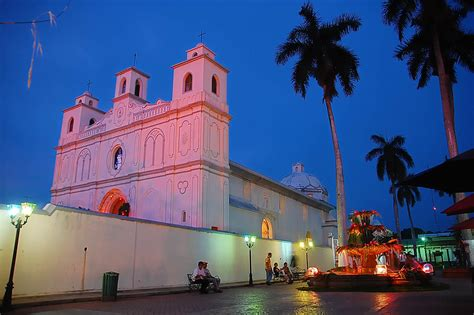
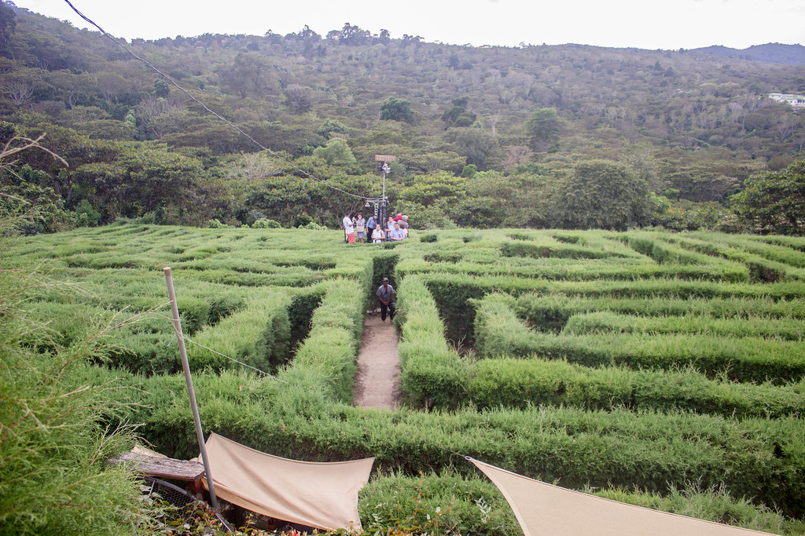

MAPA DE AHUACHAPÁN
Información
Ahuachapán es un departamento ubicado en el occidente de El Salvador. Es conocido por su clima templado y su rica biodiversidad, además de ser una región agrícola clave para la producción de café, caña de azúcar y vegetales.

Datos Históricos
Ahuachapán fue fundado oficialmente en 1824 y fue un importante centro de cultivo de café durante el auge de esta industria en el país. En tiempos de la colonia, fue una de las zonas más productivas y pobladas del occidente de El Salvador.
Lista de Municipios
- Ahuachapán (cabecera)
- Apaneca
- Atiquizaya
- Concepción de Ataco
- El Refugio
- Guaymango
- Jujutla
- San Francisco Menéndez
- San Lorenzo
- San Pedro Puxtla
- Tacuba
- Turín
Centros Turísticos
Ahuachapán es famoso por su parque nacional El Imposible, que es uno de los principales atractivos ecoturísticos del país. Además, Ataco y Apaneca son conocidos por sus pueblos pintorescos y la producción de café de alta calidad.

Centros Turísticos
En Ahuachapán, puedes visitar Ataco, uno de los pueblos más encantadores parte de la ruta, conocido por sus pintorescas calles empedradas y sus coloridas casas coloniales.
Centros Turísticos
Esta iglesia es una de las más hermosas y antiguas de El Salvador, construida en el siglo XVIII. La iglesia es un ejemplo impresionante de la arquitectura barroca y cuenta con una impresionante fachada y una decoración interior lujosa
Centros Turísticos
El laberinto está ubicado dentro del Café Albania, un negocio creado en una finca cafetalera de seis manzanas de terreno ubicada en el municipio de Apaneca departamento de Ahuachapán, Fuente: El Laberinto de Albania, al occidente del país, el cual abrió sus puertas al público en julio de 2017
Lagos
A diferencia de otros departamentos de El Salvador, Ahuachapan no cuenta con lagos , sin emabargo cuenta con una laguna llamada Laguna El Espino, Antiguamente llamada Huitziapan o Laguna de las espinas, se localiza en el departamento salvadoreño de Ahuachapán.
Ríos
Río Paz, una joya natural en Ahuachapán, el río emerge en Guatemala, fluye a través de Ahuachapán en El Salvador, y finalmente desemboca en el Océano Pacífico. Es accesible desde varias localidades en ambos país pero se recomienda el área de Caserío El Desvío y frontera Las Chinamas.

Volcanes
Volcán de Apaneca se conoce también como Cerro Chichicastepec, Cerro Chichicastepeque, Cerro Grande de Apaneca, Cerro de Apaneca, Volcan de Apaneca, Volcán de Apaneca. Se le dice "cerro" Apaneca porque no tiene cráter visible ni actividad volcánica, y su forma no es tan pronunciadamente cónica como otros volcanes.
Personajes Célebres
Ricardo Trigueros de León (Nacio, en Ahuachapán, El Salvador, 13 de noviembre de 1917; fallecio, en San Salvador, El Salvador, 20 de mayo de 1965) fue un poeta, periodista, abogado y crítico literario salvadoreño.

Personajes Célebres
Edgardo Alfredo Espino Najarro (Ahuachapán; 8 de enero de 1900-San Salvador; 24 de mayo de 1928), conocido como Alfredo Espino, fue un poeta salvadoreño.